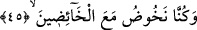
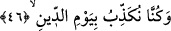
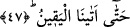

getirebilir: Yukardaki ifâdeler, yâni “namaz kılanlardan değildik, yoksulu
doyurmuyorduk” cümleleri onların hayrı kazanmakta kusurlarına müminlerden namaz
kılıp, zekat verenlerin ulaştıkları mükâfâtlardan mahrum kalmalarına teessüf, üzüntü ve
iç yangısı ifâde eden cümlelerdir. Bu cümlelerden kâfirlerin “îmandan önce amelle
yükümlü oldukları” sonucunu çıkarmak gerekmez.
45. (Bâtıla) dalanlarla birlikte dalıyorduk,
“Bâtıl” kelimesinden maksad; Peygamber (s.a.) Efendimizle onun sahâbîlerini
kınamak, gıybet etmek ve “o şâirdir” veya “sihirbazdır” ya da “kâhindir” vb. şekilde
sözler söylemekdir.
Dalmak anlamına gelen “havz” kökü aslında ne olursa olsun mutlak olarak herhangi
bir şeye başlamak anlamınadır. Ancak daha sonra örfte bâtıla, çirkine ve insanı
ilgilendirmeyen şeylere dalmak anlamına kullanılır olmuştur.
Bir hadis-i şerifte şöyle buyurulur: “Kıyâmet günü insanların en çok günahla
mahşere geleni Allah’a isyana en çok dalanları olacaktır.”
46. Cezâ gününü de yalan sayıyorduk,
“Cezâ” din “gününü de yalan sayıyorduk” kâfirlerin -içinde sonsuz belâlar dehşetler
olmakla birlikte- âhiret gününe cezâ günü demeleri bu günün en belâlı gün olmasından
ve onların bu günde hesaba çekileceklerinden dolayıdır. Bundan önceki âyetlerde diğer
musîbetlerin hepsi geçmişti. Şimdi onların -işledikleri tüm cinâyetlerin içinde en
büyüğü olan- din gününü inkâr cinâyetleri en sona bırakılmıştır. Çünkü kıyâmeti yalan
saymak ve inkâr etmek küfürdür. Yukarda geçen üç husus fasıklıktır, işte bu en büyük
cinâyetin en sona bırakılması bu günahın çok büyük bir günah olduğunu vurgulamak ve
çirkinden daha çirkine doğru bir derecelendirme ve aşama aşama yükselme ifâde etmek
içindir. Kâfirler sanki şöyle demiş oluyorlar: Bütün bunlardan sonra biz din gününü de
yalan sayıyorduk. “Din gününün yalan sayılmasının geriye bırakılmasının bir başka
sebebi ise onların bunu yalan saymalarının yukarda sıralanan öteki cinâyetlerine bitişik
olduğunu beyân ve bu cinâyetlerinin kendilerinin de ifâde ettikleri gibi hayatlarının
sonuna kadar sürüp gittiğini ifâde etmek içindir.